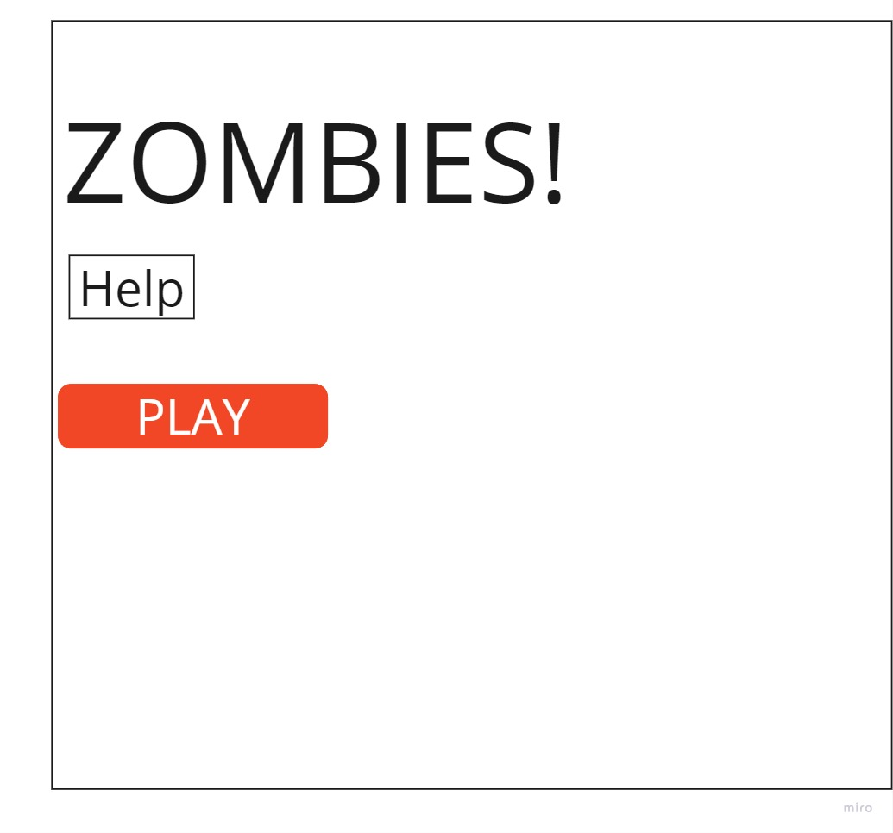
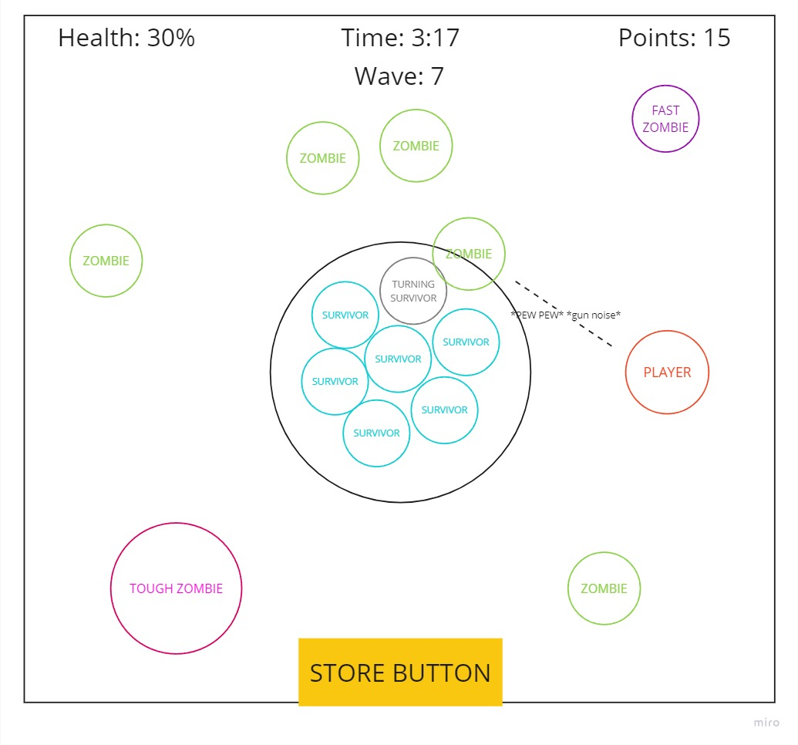
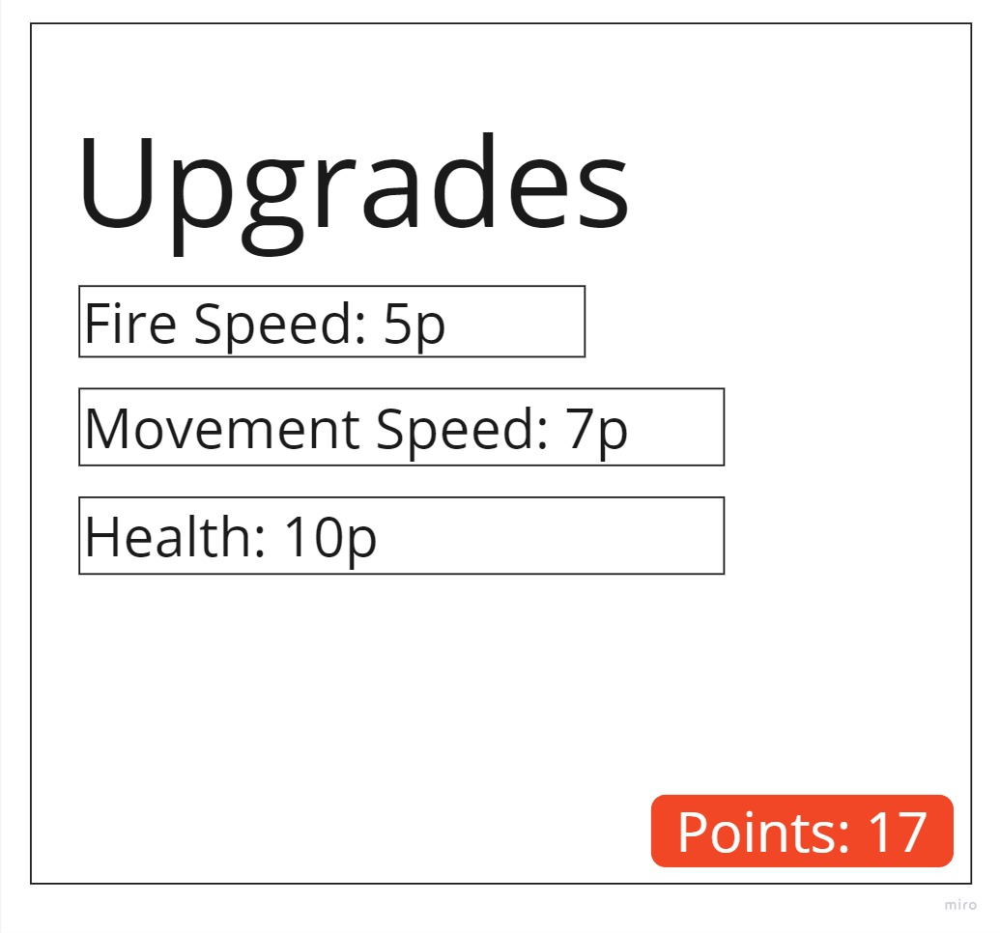

Concept
Protect your group of survivors as long as possible against the oncoming hordes of undead!
Genre
This game broadly fits into the genres of:
- shooter
- action
- defense
Platform
Deskyop only
Story
The dead have risen to take the living and you are the only thing that stands between them and their next meal. Weather the storm as long as you can... but no one can outlive the dead. The player’s goal will be simply to allow the survivors to live as long as possible. However, the zombies will never stop coming, and eventually, the survivors will be overrun. Throughout the action-focused gameplay and the player’s frantic attempts to keep everyone alive, they will eventually come to realize the main theme of the game: that they can only delay the inevitable.
Esthetics
The graphics will be based on simple pixel art sprites from a top-down view with retro-esque sounds. Some of the sounds that might be needed are those necessary for combat (i.e. gunshots, hurt/death noises, etc) as well as some for UI elements to make things feel more responsive. There may also be a background track and zombie groaning noises for added effect.
Gameplay
Mecanics
The player walks around and shoots zombies, earning points. They can spend these points to upgrade their abilities like fire rate or heath. If the player dies they respawn after some time, however, the survivors do not respawn, and the game will end once they are all dead. Survivors that have been killed by zombies will become zombies themselves.
Control
Keyboard/Mouse
- Move: W,A,S,D
- Shoot: spacebar or left click
- Aim: mouse
Onboarding
A help page detailing the controls and premise of the game will be accessable through the menu.
Player learning
Players will have to learn how to most efficiently protect a large area at once. They will have to decide which upgrades will give them the best results and make sure they have good positioning so that they can quickly react to new incoming zombies. Players may also need to figure out when to prioritize certain enemies based on the threat they pose. (i.e. do I kill the normal zombie that’s close to the survivors or kill the fast zombie, which is farther away, but might sprint there quicker?)
Mockups
  Documentation
For the most part, the development of this project was a straightforward process. The most difficult part of this project to implement was the NPC AI and movement. Luckily, I’ve spent most of this semester learning about physics-based agents and steering forces in another class and decided to bring some of that knowledge into this project.
In my other class, we learned about steering forces through Unity and coded in C#, so transferring my knowledge about them into JavaScript was no simple task. I had to deal with working with an all-new vector system in VictorJS and figure out how this system could work outside Unity’s component-based architecture.
I decided on a class structure where a control class holds a reference to a physics object. This system would allow the PhysicsObject class to behave much like a Unity component which is stored and referenced within the parent object. The reason I did it this way was because both the player and the AI in the game would need a physics object to move and interact with the world, but would need very different control methods.
The PhysicsObject class has properties and methods for the force-based movement of an object. It would store position, velocity, and acceleration, which would be updated each frame, and have a method for applying forces. This method would be the basis of how the control classes would interact with the PhysicsObject and tell it to move.
The Player and Agent class, the two types of control classes, would both extend PIXI.Sprite. The player was fairly simple, containing methods for shooting and respawning, and storing things like its health and speed etc. The user input is handled in the game loop. The way agents worked was a little more complex. The actual Agent class would have a reference to its physics object and several methods for defining steering forces but had no methods for interacting directly with the game.
The Zombie and Survivor classes would extend the Agent class and contain methods and properties for use in-game like health, damage, score, etc. These child classes would call the steering methods defined in the parent Agent class in order to move, allowing the zombies and survivors to exhibit very different behaviors while using the same underlying framework for AI and motion.
Unfortunately, I didn’t get to complete everything I set out to do. I wanted to add a mechanic where survivors killed by zombies would be infected and turn into zombies themselves. Additionally, I wanted to add several different types of zombies, like fast and big zombies, which would provide different types of challenge to the player. Both of these features were cut for time, but I think the game holds up fine with the endless hoards regardless. I had also originally planned to do all of my own sprites for this project, but as time ran short I decided to find some online. Unfortunately, I didn’t get a chance to switch out my UI elements, which I made myself before deciding on the pixel art style. This means the in-game artsyle is a bit different from the menu sprites. It still looks pretty good, but a little out of place.
Sources
Librairies
Sprites
- player and survivor sprites from TOP DOWN SOLDIER SPRITES PIXEL ART pack
- zombie sprites from TdeLeeuw on deviantart
- grass texture from bit-pixelson pixilart.com